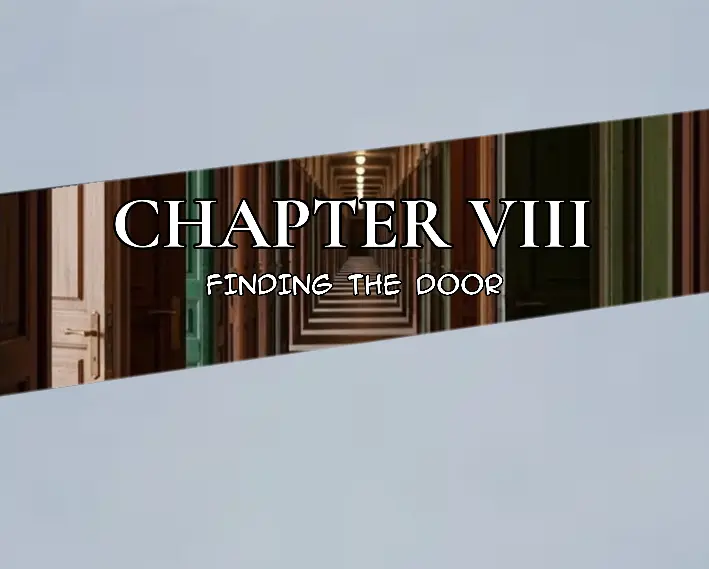
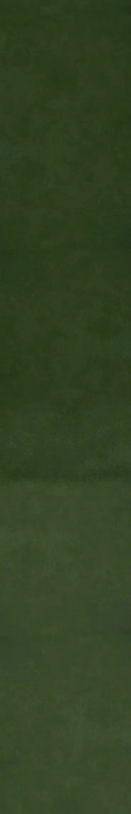
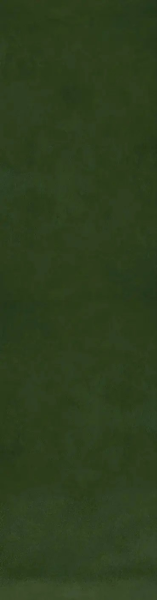

Bella woke up with the family curse still on her mind.
Yesterday kept replaying in her head. The things she had seen. The things she had learned. She still wasn't sure what to make of any of it.
She sat up in bed and looked around.
Her room was a mess.
Clothes were scattered across the floor, and there were a few things sitting on her desk that she couldn't even remember leaving there. She had planned to clean it yesterday.
She hadn't.
And honestly, she still didn't feel like doing it.
Bella got out of bed and opened her door.
The first thing she decided to do was take a bath.
Thirty minutes later, she finally stepped out of the bathroom, feeling a little more awake. She had brushed her teeth, washed up, and changed into something comfortable.
The house was strangely quiet.
Bella looked down the hallway.
"Beth?"
No answer.
She was probably already at work.
Bennet was probably with the Black Templars.
Bella shrugged and went back into her room to finish getting dressed.
As she walked toward the kitchen, she passed the sitting room.
The television was on.
Boxing.
Aunt Becca was standing near the front door, getting ready to leave.
"Morning, Auntie," Bella said.
"Morning, Bella."
Bella walked over and hugged her.
"You're already leaving?"
"Yeah. I have somewhere to be."
"Oh."
Bella let go of her.
"See you next time."
"See you."
Becca opened the door and walked out.
Bella watched her leave for a moment before closing the door.
She then headed into the kitchen.
She grabbed a bowl from the cupboard and poured herself some cereal.
She was about to sit down when a familiar voice suddenly appeared in her head.
*Hey, Luc.*
*Morning.*
Bella paused.
She had been wondering whether he would say anything.
"Sorry I wasn't here yesterday," she said silently. "We had a family thing."
There was a short pause.
"I'm really sorry."
*It's okay.*
Another pause.
*It's not like you had the time to answer me anyway.*
Bella lowered her spoon.
"I'm sorry."
*It's okay.*
The conversation became quiet again.
Bella stared down at her cereal.
"How are you?"
*I'm normal.*
Bella frowned slightly.
"Normal?"
*Yeah.*
She didn't know what to say to that.
"Well... I'm not sure how I am."
*Why?*
"I don't know."
She looked toward the window.
There was something about yesterday that she couldn't put into words.
Maybe it was the curse.
Maybe it was everything else.
Or maybe she was just tired.
"And you?"
*I'm normal.*
Bella almost laughed.
"You already said that."
*Because it's still true.*
She smiled faintly.
For a few seconds, neither of them said anything.
Bella took another spoonful of cereal.
Lucas didn't say anything either.
It wasn't an uncomfortable silence.
Not exactly.
It was more like neither of them knew what they were supposed to say next.
And for some reason, Bella didn't feel like ending the conversation.
So she stayed there.
Eating her cereal.
Listening to the quiet house.
And letting Lucas stay in her head.
Becca met Bianca as she was walking out of the house.
They were both heading in opposite directions when Becca noticed her.
"Oh, if it isn't my little sister," said Becca.
"Don't start this," said Bianca as she walked past her.
"Come on. I was just greeting you."
"Then just say good morning, Bianca."
Becca smiled.
"Good morning, Bianca."
"Morning to you too, Becca."
"How cute."
Bianca stopped and looked back at her.
"Shouldn't you be leaving?"
"Gosh, you really can't hide how much you don't want me around."
Bianca opened the door.
"At least I'm the devil you know."
"You're worse."
Bianca stepped inside as Becca walked away.
She closed the door behind her.
The house was quiet again.
Bianca walked toward the kitchen but stopped when she noticed something.

The back door was open.
She frowned.
She walked toward it and looked outside.
Benjamin was in the yard.
And he wasn't alone.
Elsa was there with him.
Bianca's eyes widened slightly.
"Benjamin!"
Benjamin looked toward the house.
"Come inside!"
He said something to Elsa before walking toward the door.
A few moments later, he entered the house.
Bianca looked at him.
"You know Becca could have seen Elsa, right?"
Benjamin shrugged.
"She wouldn't have."
Bianca stared at him for a moment.
"That's not the point."
Benjamin said nothing.
Bianca sighed and closed the back door behind them.


Lucas got out of bed and opened the door to his room.
He could hear voices coming from the sitting room.
When he walked out, he saw Kim and Damon sitting together, eating and talking.
Kim was in the middle of a conversation.
"You know, I've been thinking."
Damon looked at her.
"That's dangerous."
Kim ignored him.
"I think this university could be some kind of place where the government does secret experiments."
Damon stopped eating.
"Secret experiments?"
"Think about it," Kim said. "Imagine their agents are dressed as students. They can enter and leave freely, carrying bags, suitcases, whatever they want. Nobody would question them. Everyone would just think they're new students."
She leaned back.
"That's why you can never tell who could be an agent."
Damon nodded slowly.
"Wow. That's actually a good idea."
"I know."
"They'd just blend in without anyone noticing."
"Exactly."
Damon looked toward the ceiling.
"That would explain why the number of students sometimes seems completely ridiculous."
Kim pointed at him.
"See? You're getting it."
Lucas walked past the doorway.
Kim and Damon didn't notice him.
"I'm curious, though," Kim continued. "Which room are you looking for? I heard you asking Lucas about it the other day."
Damon looked at her.
"What if there was a door..."
He paused.
"...where you could enter it, and it would take you somewhere else?"
Kim stared at him.
"Somewhere else?"
"Yeah."
Before Damon could explain further, Lucas coughed from behind them.
They both turned.
Lucas stood there, looking at them.
"Morning, Luc," Kim said.
Lucas looked at his sister and gave a small nod.
Damon looked at him.
"Do you want something to eat?"
Lucas nodded.
"Yeah."
"Well, there's some ice cream and lasagna in the fridge."
Lucas stared at him for a moment.
"Ice cream and lasagna?"
Damon shrugged.
"Breakfast."
"And I think I left some in the microwave. It's still warm," said Kim.
"Oh, thanks. I will."
Kim picked up her phone and checked the time.
Her eyes widened.
"I'm late."
"Later," she said, already heading toward the door.
She opened it and left.
Lucas looked at Damon.
"You made her late."
Damon continued eating.
"That's weird, man."
Lucas walked into the kitchen and opened the fridge.
No milk.
He stared inside for a moment before closing it.
He then opened the microwave.
The lasagna was still there.
He took it out and grabbed a fork.
Lucas took a tiny taste.
Damon watched him carefully.
Lucas swallowed.
He took another bite.
Then another.
Damon continued watching him.
"What?"
"Nothing."
Lucas ignored him and kept eating.
"You promised you'd help me find the door," Damon said.
Lucas looked at him while swallowing.
"We might as well go now."
He put the fork down and headed toward the door.
Damon quickly followed.
He took one last sip from the cold drink in his cup before leaving.
He glanced back at the lasagna.
Lucas had barely eaten any of it.
Damon walked over, picked up the fork, and took exactly one scoop.
He tasted it.
He nodded to himself.
"Not bad."
Then he followed Lucas out.
Outside, the university was the same as always.
Students were everywhere.
Some were sitting around talking. Others were playing games, laughing, or just wasting time between classes. A few students were smoking, despite the fact that smoking wasn't allowed on university grounds.
But Damon saw it differently now.
After what Kim had said, he couldn't help looking at everyone differently.
Some of these students could be agents.
Maybe that student over there was one.
Maybe the guy sitting on the stairs.
Maybe the person walking past them right now.
He started wondering how many of them were actually students.
Lucas, meanwhile, didn't seem to care.
As the two walked across the university grounds, they were approached by three students.
Two boys and a girl.
Lucas looked at them.
For some reason, the three of them looked like serial killers.
"Hey, Lucas."
The girl stepped closer.
"I heard you know the Goreroom's number. How much for it?"
"Ten crowns."

The girl looked at one of the boys.
He pulled out his wallet and handed Lucas the money.
Lucas took it.
"Room 1313."
"Thanks."
The three students turned around and walked away.
Lucas and Damon continued in the opposite direction.
Damon watched the three students disappear into the crowd.
Then he looked at Lucas.
"Do you have all the room numbers in your brain?"
"I wish."
Lucas shoved the money into his pocket.
"I only remember the ones people ask for a lot."
"Oh."
Damon nodded.
"That makes sense."
They continued walking.
They passed a couple sitting on a bench, kissing.
Damon glanced at them.
Then at the students walking around them.
Then back at the couple.
His eyes narrowed slightly.
For the first time, the university didn't just look strange to him.
It looked suspicious.
Bella finished her cereal and carried the bowl to the kitchen.
For a moment, she just stood there.
The house was still quiet.
She looked toward the sitting room.
Maybe she could watch something.
Bella walked inside and looked around for the remote.
She couldn't see it at first.
Then she noticed it.
It was lying beside Beth's teddy bear on the couch.
Bella picked up the remote.
She looked at the teddy bear for a moment before sitting down.
The boxing match was still playing.
She changed the channel.
A movie came on.
Soul Taker.
Bella settled into the couch.
"Hey, Luc."
*Yeah?*
"I've been thinking."
Lucas didn't answer immediately.
"About yesterday?"
*No.*
Bella looked at the television.
"About us meeting."
There was a pause.
"I think I actually want to meet you."
*You do?*
"Yeah."
She hugged one of the cushions against herself.
"I don't know. I just..."
She struggled to find the words.
"I can't handle this distance anymore."
Lucas remained quiet.
Bella continued.
"I know we can talk like this, but sometimes it feels like you're not really here."
*I'm here.*
"I know."
She smiled faintly.
"But you know what I mean."
Lucas didn't respond.
Bella looked down at the teddy bear sitting beside her.
"I've also been worrying about you."
*Why?*
"Because of how things have been lately."
She paused.
"I feel like I'm causing you to worry too."
*You don't have to worry about me.*
"That's exactly what someone I'd worry about would say."
There was another silence.
Bella sighed.
"I just want to meet you, Luc."
*Maybe we should.*
Bella looked up.
"Really?"
*Yeah.*
A knock suddenly came from the front door.
Bella turned her head.
"Someone's here."
She put the remote down and stood up.
"I'll be back."
She walked toward the front door and opened it.
A girl stood outside.
"Hi."
"Hi."
The girl looked past Bella into the house.
"Is Bennet here?"
"No. He's not home."
"Oh."
The girl seemed disappointed.
"I'm Violet. I'm a friend of his."
"I know."
Bella smiled politely.
"I've seen you around."
"Right."
Violet nodded.
"Could you tell him I stopped by?"
"Sure."
"Thanks."
Violet turned around and walked away.
Bella closed the door.
She stood there for a moment before heading back toward the sitting room.
She was already thinking about what she had been saying to Lucas.
But as soon as she entered the room, she stopped.
The movie was gone.
Boxing was playing again.
Bella stared at the television.
"What?"
She looked at the remote.
It was exactly where she had left it.
She hadn't touched it.
Bella slowly looked toward the couch.
The teddy bear was sitting beside her.
She stared at it.
For a few seconds, she didn't move.
Then she walked over and sat down beside it.
Bella looked at the teddy bear suspiciously.
It stared back at her with its usual blank expression.
She glanced at the television.
The boxing match continued.
"Okay..."
Bella picked up the remote.
She changed the channel back to Soul Taker.
Then she put the remote down.
She looked at the teddy bear one more time.
"Don't start."
The teddy bear remained silent.
Bella leaned back against the couch.
After a moment, she returned her attention to the movie.

Lucas and Damon continued across the university grounds.
The morning had gotten busier.
Students were everywhere now.
Some were sitting on the grass in groups, talking and eating breakfast. Others were walking toward the different buildings, some carrying books while others carried nothing at all and looked like they had simply woken up five minutes ago.
A group of students were playing football on one of the open fields.
One of them kicked the ball too hard.
It flew over the fence.
"Fuck!"
The others laughed.
Damon watched as one of them climbed over the fence to retrieve it.
"Do they even have classes?"
"Probably."
"Probably?"
Lucas shrugged.
"I don't know."
They continued walking.
A girl sitting on a bench was trying to finish an assignment while her friend kept distracting her.
"Give me the paper."
"No."
"Just let me see number four."
"No."
"I'll give it back."
"You said that last time."
Damon smiled as they passed.
"University drama."
"Everywhere."
A few meters ahead, two students were arguing over a phone.
"I told you she wasn't talking about you."
"Then why did she block me?"
"Because you're annoying."
Lucas and Damon walked past them.
Damon looked at Lucas.
"Do you ever miss being normal?"
Lucas glanced at him.
"Was I ever normal?"
"Fair point."
They kept walking.
The sixth entrance was still some distance away.
The university building stood in the middle of the enormous yard, towering over everything around it.
There were six entrances into the building, spread around its sides.
Damon looked toward the building.
"That's the sixth gate, right?"
"Yeah."
"You've been there before?"
"Of course."
"What's inside?"
Lucas looked at him.
"It's an entrance."
"I know that."
"Then you know what's inside."
Damon shook his head.
"You know what I mean."
Lucas smiled slightly.
"No idea."
They passed another group of students sitting beneath a tree.
One of them was asleep.
Another was taking pictures of him.
Damon noticed.
"That's going to end up online."
"Probably."
"Should we warn him?"
Lucas kept walking.
"No."
"Why?"
"He'll find out eventually."

Damon laughed.
They continued toward the building.
As they got closer, the university became quieter around them. Most of the students were gathered farther out in the yard, while the area around the building was mostly people coming and going through the different entrances.
The sixth entrance stood ahead.
Lucas walked toward the large door.
Damon followed.
As they reached it, Damon suddenly looked at the door.
"Wait."
Lucas stopped.
"What?"
"Why do you guys call this the sixth gate?"
Lucas looked at him.
"Because everyone does."
"But it's a door."
"I know."
Damon pointed toward the other side of the yard.
"And the actual gates are outside the yard."
"Yeah."
"So there are six gates and six doors?"
"Technically."
Damon frowned.
"That's confusing."
Lucas shrugged.
"You get used to it."

He opened the door.
"Coming?"
Damon sighed.
"Yeah."
The two stepped inside the university building.
Behind them, the sixth door slowly closed.
Lucas and Damon stepped inside the university building.
The noise from outside immediately became quieter behind them.
Not silent.
Just different.
Students were walking through the halls in every direction. Some were heading toward classrooms, others were standing around talking, and a few were leaning against the walls with their phones in their hands.
Lucas looked around.
Damon did the same.
For a moment, neither of them said anything.
Then Damon looked at Lucas.
"So where are we going?"
Lucas shrugged.
"I don't know."
Damon stopped walking.
"You don't know?"
"I don't know the door."
"You said you were going to help me find it."
"I said I'd help you look."
Damon stared at him.
"That's basically the same thing."
"No."
Lucas continued walking.
Damon followed.
"So you don't actually know where we're going?"
"No."
"Then why did you bring me through the sixth entrance?"
"Because you said you wanted to find a weird door."
"Yeah."
"This is a building with weird doors."
Damon looked around.
"That's your plan?"
"Pretty much."
They continued down the hallway.
Damon looked at the doors as they passed.
There were classrooms on both sides, some with numbers written beside them. Students went in and out without paying much attention to them.
Damon glanced at one of the rooms.
"What about the books?"
Lucas looked at him.
"What books?"
"The ones you said were in there."
"I didn't say there were books."
"You said something about a library."
"I said there could be a library."
Damon sighed.
"So you don't know."
Lucas shrugged.
"I'd have to know what's in the room."
Damon frowned.
"How would you know what's in the room?"
"I wouldn't."
"Then how would you know if it's the right one?"
Lucas looked at him.
"I wouldn't."
Damon stared at him for a few seconds.
"You're really bad at helping."
"I've been told."
They turned down another hallway.
A group of students passed them, talking loudly.
"I'm telling you, that's where they found him."
"No, it wasn't."
"It was."
"I heard it was on the roof."
"No, the roof was where he was going."
"Then where was he found?"
"I don't know."
Lucas and Damon slowed down slightly.
The students continued walking past them.
"I heard he jumped."
"Shut up, man."
"What?"
"Just shut up."
Damon looked at Lucas.
Lucas didn't say anything.
The students disappeared around the corner.
Damon looked back toward the hallway they'd come from.
"Did they just say someone jumped?"
Lucas nodded.
"Sounds like it."
"From the university?"
"Probably."
Damon was quiet for a moment.
Then he looked ahead again.
"That's fucked up."
Lucas nodded.
"Yeah."
They kept walking.
Around them, university life continued as if nothing had happened.
A student rushed past them carrying a stack of papers.
Someone laughed from inside a classroom.
A professor opened a door and nearly walked into another student.
"Sorry."
"It's fine."
A phone rang somewhere down the hall.
Nobody seemed particularly interested in the conversation they'd just overheard.
Damon glanced at Lucas.
"You think it was the guy from yesterday?"
Lucas looked at him.
"The guy on the roof?"
"Yeah."
Lucas shrugged.
"Maybe."
Damon looked down the hallway.
"That's depressing."
Lucas continued walking.
"University has a lot of people."

"That's not an answer."
"I know."
They reached another intersection.
Lucas stopped.
He looked down one hallway.
Then the other.
Damon waited.
"You know where we are?"
Lucas shook his head.
"No."
Damon sighed.
"Great."
Lucas started walking again.
"We'll find something."
Damon followed.
"That's not very reassuring."
"It wasn't supposed to be."

Bella sat beside Beth's teddy bear.
The television was still playing.
She wasn't really watching it.
Her eyes were on the screen, but her mind was somewhere else.
She glanced down at the teddy bear.
It was sitting exactly where she'd left it.
Bella stared at it for a moment.
"Lucas?"
There was a short pause.
"Yeah?"
Bella looked back at the television.
"Can I ask you something?"
"Sure."
She shifted slightly in her seat.
"Beth's teddy bear."
Lucas was quiet.
"What about it?"
"I don't know."
Bella looked down at the bear again.
"There's just something weird about it."
"Weird how?"
"I don't know."
She reached over and touched its head.
"It's probably nothing."
"That's usually what people say before telling me something weird."
Bella smiled slightly.
"I think you're starting to know me too well."
"Probably."
She leaned back into the couch.
"Beth really likes this thing."
"It's a teddy bear."
"I know."
"You're making it sound like it's a family member."
Bella looked at the bear.
"Maybe it is."
Lucas laughed quietly.
Bella smiled for a moment.
Then her expression faded.
"I wish you were here."
Lucas didn't answer immediately.
Bella continued staring at the television.
"I mean, actually here."
"I know."
"I don't want to keep talking to you like this."
"Like what?"
"Like you're somewhere inside my head."
Lucas paused.
"Technically, I am."
"That's not what I mean."
"I know."
Bella sighed.
"I just want to meet you."
"You've said that."
"I know."
She looked down at her hands.
"But I really mean it."
There was another silence between them.
Bella glanced toward the front door.
"Sometimes I feel like you're right there, but you're not."
Lucas didn't say anything.
"And then I remember we're not even in the same place."

"Bella—"
"I know."
She cut him off gently.
"I'm not blaming you."
She looked back at the teddy bear.
"I just..."
She hesitated.
"I miss someone I haven't even properly met."
Lucas was quiet.
Bella smiled faintly.
"That's pretty stupid, isn't it?"
"No."
"You didn't even think about it."
"I didn't need to."
Bella looked at the teddy bear again.
"I want to meet you, Luc."
"I know."
"No."
She shook her head.
"I don't think you do."
She leaned closer to the bear, resting her arm against the side of the couch.
"I really want to."
For a moment, neither of them spoke.
The television continued playing in front of her.
Bella finally smiled.
"Maybe we should actually do it."
"Meet?"
"Yeah."
Lucas paused.
"Maybe."
Bella looked at the screen again.
"Good."
She leaned back into the couch.
And this time, she actually watched the television.
Lucas and Damon continued through the university building.
They had already gone through several hallways, checking doors as they went.
Damon looked at another door.
"Not that one?"
"No."
"You sure?"
"Yeah."
"How?"
"I've been here before."
Damon nodded and kept walking.
They passed a classroom where a lecturer was already talking while half the students looked like they were about to fall asleep.
Damon glanced through the window.
"That guy looks like he hates his job."
Lucas looked.
"He probably does."
"How do you know?"
"Look at him."
Damon laughed.
They continued down the hallway.
After a few more turns, Lucas suddenly slowed down.
Damon noticed.
"What?"
Lucas looked at a door on their left.
He frowned.
"Have you seen this before?" Damon asked.
"No."
Damon looked at him.
"You don't know this one?"
Lucas shook his head.
"I know most of the rooms around here."
"Most?"
"Yeah."
Damon stepped closer to the door.
There was nothing particularly strange about it.
It looked like every other door in the university.
"What do you think is inside?"
"I don't know."
"Should we open it?"
Lucas stared at the door for a moment.
Then he grabbed the handle.
"Yeah."
He opened it.
They looked inside.
It was a library.
Shelves filled the room from one end to the other.
Books covered almost every wall.
There were tables scattered around the middle of the room, with chairs pushed underneath them.
But there was nobody there.
Damon stepped inside.
"Okay."
Lucas followed him.
"I didn't know there was a library here."
"There are books everywhere."
"I can see that."
Damon walked toward one of the shelves.
He ran his finger across the spines.
"So you don't know this room?"
"No."
Lucas looked around.
"Not at all."
Damon pulled a random book from the shelf.
Lucas immediately looked at him.
"Put it back."
Damon paused.
"Why?"
"I don't know."
"Then why?"
Lucas stared at the book.
"Just put it back."
Damon looked at him for a moment before returning the book to the shelf.
"Okay."
They continued walking between the shelves.
Damon looked around.
"Maybe this is just another part of the university you've never been to."
"Maybe."
"You don't sound convinced."
"I'm not."
"Why?"
Lucas looked around again.
"Because I should know this place."
Damon nodded.
"Fair."
They walked toward the other side of the library.
Nothing happened.
No strange sounds.
No movement.
Nothing.
Damon looked at Lucas.
"So... that's it?"
"I guess."
"We came all this way for a library."
"You wanted to find the door."
"I found the door."
"And?"
"And it's a library."
Lucas shrugged.
"Then let's go."
Damon sighed.
"Fine."
They left the library and closed the door behind them.
They continued walking.
For a while, neither said anything.
Then Damon spoke.
"You know, I actually like libraries."
Lucas looked at him.
"You just wanted to leave."
"I like normal libraries."
"What's wrong with this one?"
"I don't know."
Damon glanced back at the door.
"Something about it."
Lucas didn't answer.
They continued walking through the university.
Neither of them really knew where they were going anymore.
Damon looked at the doors as they passed them.
"So how long have you actually been here?"
Lucas shrugged.
"A while."
"That's not a number."
"I don't count."
"You should."
"Why?"
"So you know how much time you've wasted."
Lucas looked at him.
"You're the one who wanted to come here."
"True."
They continued walking.
Damon looked through one of the classroom windows.
"Do you think anyone actually pays attention in those classes?"
Lucas glanced inside.
"Probably not."
"Then what's the point?"
"Getting a degree."
"Right."
Damon nodded as if that answered everything.
They walked a little farther.
A few students passed them, talking about an assignment. Another student was sitting on the floor with his headphones on, completely ignoring everyone around him.
Damon looked at him.
"That's probably the smartest person here."
"Why?"
"He's ignoring everyone."
Lucas smiled.
They kept walking.
A few seconds later, Damon suddenly stopped.
"Wait."
Lucas turned around.
"What?"
Damon looked at one of the doors they'd just passed.
"I think I've seen this one before."
Lucas walked back toward him.
"You think?"
"Yeah."
Lucas looked at the door.
Then he looked at the one beside it.
Then the next one.
They all looked exactly the same.
He frowned.
"I think they all look the same."
Damon looked at him.
"That's not very helpful."
"No."
Lucas stepped closer to the door.
He studied the number beside it.
Something about it felt familiar.
Not because he remembered being there.
Because he remembered not being there.
Damon reached for the handle.
"Should we?"
Lucas hesitated.
Then nodded.
"Yeah."
Damon opened the door.
They looked inside.
Rows of beds filled the room.
There were people everywhere.
Twenty.
Maybe thirty.
Some were lying down beneath blankets.
Others were sitting upright, their heads tilted forward as they slept.
Someone had an IV beside their bed.
Another person was still wearing university clothes.
Nobody moved.
Nobody spoke.
Nobody seemed to notice the door had opened.
Damon stepped inside slowly.
Lucas followed.
Damon looked around.
"Is this a hospital?"
Lucas shook his head.
"I don't think so."
"Then what is it?"
Lucas looked at the beds.
The sleeping people.
The equipment.
The room.
"I don't know."
Damon walked a little farther in.
One of the people shifted slightly in their sleep.
Both of them stopped.
The person settled again.
Damon looked at Lucas.
"Are they students?"
"I don't know."
Lucas stared at the room.
He looked more unsettled now.
"This doesn't make sense."
"What?"
"I should know this room."
Damon looked around.
"Maybe you've just never been here."
Lucas shook his head.
"I've been around this university."
"So?"
"So I'd remember this."
Damon didn't answer.
Neither of them moved for a few seconds.
There was nothing frightening happening.
That was what made it worse.
Just people sleeping.
As if this were completely normal.
Lucas finally stepped backward.
"Let's go."
Damon nodded.
They walked back toward the door.
Lucas took one last look inside before pulling the door shut.
The two stood in the hallway.
Damon looked at him.
"You okay?"
Lucas stared at the closed door.
"Yeah."
Damon waited.
Lucas looked at him.
"I'm just confused."
"Me too."

They started walking again.
Neither of them looked back.
They walked back through the hallway.
Neither of them said anything for a while.
Damon eventually broke the silence.
"I've heard people get lost here."
Lucas looked at him.
"People get lost everywhere."
"No."
Damon shook his head.
"I mean here."
Lucas kept walking.
"What do you mean?"
"I've heard stories about students entering the wrong corridor and not being able to find their way back."
Lucas shrugged.
"Maybe they have a bad sense of direction."
Damon looked at him.
"Some of them apparently weren't found for hours."
Lucas glanced at him.
"How long?"
"What?"
"How long were they lost?"
Damon shrugged.
"Some say hours."
He paused.
"Some say days."
Lucas looked ahead again.
He didn't say anything.
They continued walking.
Damon looked back toward the hallway they'd come from.
"Imagine being lost in this place for days."
"You'd eventually find your way out."
"You sure?"
"No."
Damon laughed.
"That's comforting."
Lucas shrugged.
They reached another hallway.
Students passed them in both directions, talking, laughing, carrying books, completely unaware of the rooms they'd just seen.
Lucas looked at the time.
"I'm hungry."
Damon looked at him.
"Yeah, because you didn't eat the lasagna we left for you."
"I did."
"You took one bite."
"I ate it."
"You literally left it on the counter."
"I went back for it."
Damon stared at him.
"When?"
"Before we left."
"You ate the lasagna?"
"Yeah."
Damon shook his head.
"You're weird."
Lucas shrugged.
"So where are we eating?"
"Cafeteria?"
Lucas shook his head.
"No."
"Then where?"
"Our apartment."
Damon nodded.
"Yeah."
They continued walking toward the exit.
A few seconds later, Damon stopped.
"Actually, I'm going to the cafeteria."
Lucas looked back at him.

"Alright."
"You don't want anything?"
"No."
Damon shrugged.
"Fine."
They reached the entrance.
Lucas headed toward the apartment while Damon turned toward the cafeteria.
"See you later."
"Yeah."
Lucas kept walking.
Damon watched him disappear into the crowd before heading in the opposite direction.
As Lucas was walking toward Kim's apartment, he ran into Julie.
"Oh, hey."
Julie looked at him.
"I forgot we're friends."
Lucas looked at her.
"And best friends."
"Right."
Julie smiled.
"What's up?"
"As you can see, I'm eating a chapati."
Lucas looked at the chapati in her hand.
"Wow. I love chapatis."
He paused.
"You should've made soup and tea."
"Yeahh, but my chapatis are horrible."
She held it up.
"They're hard as wood, bruh."
"You should learn how to make them properly, then."
"Nooo. I didn't make this one."
Julie took another bite.
"I bought them from the cafeteria."
Lucas looked at the chapati again.
"Whoever made this made shit."
He shook his head.
"Even I make better ones."
Julie laughed.
"Anyways, how are you?"
"I'm not okay."
Julie stopped chewing.
"And you?"
"I'm okay, I guess."
"Why aren't you okay?"
Lucas shrugged.
"Eh. Just some life rocks."
Julie nodded.
"Understandable."
She took another bite of her chapati.
Then she looked at Lucas.
"Uhm... I think I'm the problem."
Lucas immediately thought to himself.
*Fuck. I know where this is going.*
He looked at her.
"Eh... how?"
"You remember the breakup, right?"
"Yeah."
"The guy of my dreams or whatever."
Julie looked down at her chapati.
"I left him."
"Oh."
"It was two weeks ago."
Lucas nodded.
"Since then, I've just been detached."
She paused.
"And numb."
Lucas didn't say anything.
"Someone called me avoidant."
She frowned.
"I don't think I am."
"Yeah."
Lucas nodded slowly.
"Wow. That's crazy shit."
Julie looked at him.
"I just don't see people the way I used to."
She looked around the hallway.
"Like, I used to actually care. I'd talk to people, I'd be there for them."
She sighed.
"Now I just... don't."
Lucas listened.
"And it's unfair."
"To them?"

"Yeah."
Julie looked at him.
"I'm being unfair to other people because I can't be there for them."
Lucas thought for a moment.
"I don't have a comment."
Julie smiled faintly.
"It's okay."
There was a short silence.
Lucas glanced toward the apartment.
"I'm gonna go help my sister with her book problem."
Julie nodded.
"Okay."
Lucas started walking away.
"Bye, Lucas."
"Bye."
He kept walking.
After a few steps, Lucas quietly exhaled.
He was glad to have escaped.
Then he continued toward the apartment.
When Lucas arrived at the apartment, he went straight to the fridge.
He opened it and took out a bottle of milk.
He closed the fridge, walked over to the couch, and sat down.
Lucas took a sip of the milk and leaned back.
He closed his eyes.
For a few minutes, he just sat there.
Then he opened his eyes and looked toward the bookshelf.
He got up and walked over to it.
Lucas looked through the books for a moment before pulling one out.
He looked at the cover.
House of Leaves.
He shrugged.
"Alright."
Lucas returned to the couch and opened the book.
He started reading.
Time passed.
He read for hours.
The apartment remained quiet.
Eventually, there was a knock at the door.
Lucas looked up from the book.
He closed it and placed it on the couch.
Then he walked over and opened the door.
Latifa stood outside.
"Hola."
"Yo, Lucskywalker."
Latifa walked inside.
Lucas closed the door behind her.
"Is Kim around?"
"Nah. She isn't."
"So what's up?"
Latifa shrugged.
"I can't say much."
Lucas looked at her.
"You?"
"I have much to say."
She walked toward the sitting room.
"But I can't say none yet."
Lucas followed her.
"I see."
He sat down.
"So... tongue strangled?"
Latifa laughed.
"Something like that."
She sat down on the other side of the room.
Lucas looked at her.
"How are your studies?"
"Going on..."
She paused.
"Hopelessly."
Lucas nodded.
"Is that a good thing?"
"It is as it should be."
Lucas smiled slightly.
"How's life here?"
"It's alright."
Latifa looked at him.
"Boy, is you high?"
Lucas thought for a second.
"I guess peaceful."
Latifa stared at him.
"That personality."
Lucas took another sip of his milk.
"I'm high on weird emotions."
Latifa laughed.
"So how's your girls?"
Lucas leaned back.
"Not looking forward to being in a relationship."
"Well, this is marvelous."
Lucas smiled.
"Iron Man might hear that."

.png)
.png)
.png)
.png)